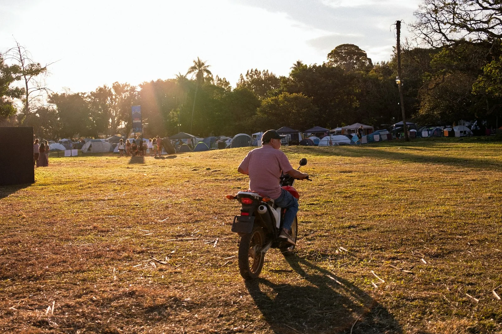

Сторис
и видео
Шаблоны для сторис (1080 × 1920), шапка видеоканала и обложки роликов (1920 × 1080). Главная задача канала: собирать влоги читателей.
Сторис
9:16 · маршрут, вопрос, опрос, призыв

Туманы
на Ветлуге
Лучше в сентябре90 км · 2 дня · вело
ночёвка у реки, паром в Воскресенском
Читать маршрутКуда поехать
своим ходом
в эти выходные?
Место для стикера «Вопрос»Напишите маршрут или город
 Лучшие ответы соберём в журнале
Лучшие ответы соберём в журналеВело
или мото?
Велосипед
медленно, зато всё видно 
Снимите
влог для
нашего канала
Любая поездка своим ходом: на выходные или на месяц. Телефона хватит.
Прислать видеоМонтаж берём на себя
Видеоканал
шапка 2560 × 423 · обложки 16:9


Волга
за один день
60 кмroadnotesНижний Новгород — Макарьево 
Илья
Сомов
Почему рядом с домом интереснее
Багаж
на два дня
Что везти, куда крепить и как не перегрузить заднее колесо
Проверено на 300 кммы смонтируем
и покажем на канале
Снимите
влог о своей
дороге
Телефона хватит